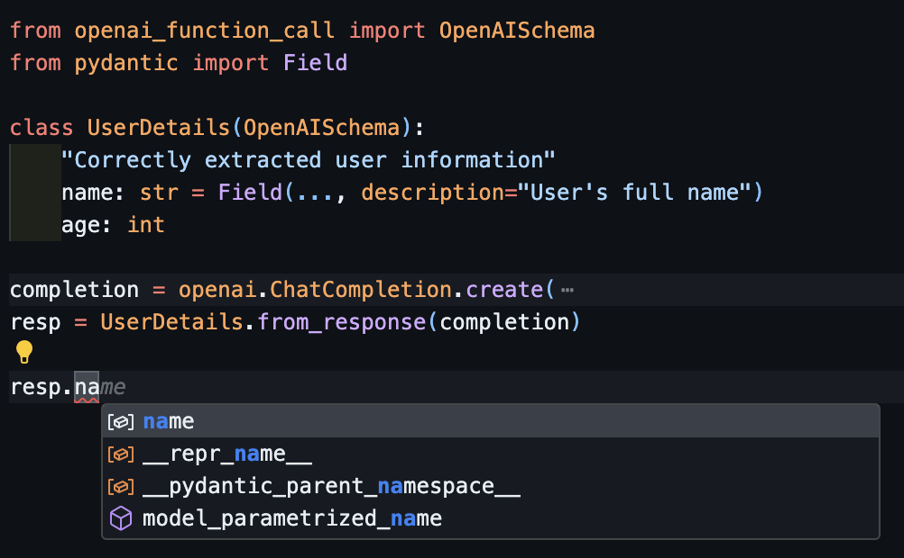
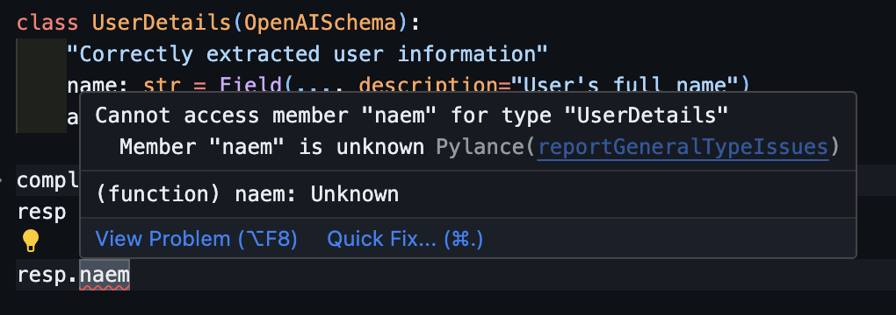

Instructor (openai_function_call)
Renaming from openai_function_call
This library used to be called openai_function_call simply change the import and you should be good to go!
Structured extraction in Python, powered by OpenAI's function calling api, designed for simplicity, transparency, and control.
This library is built to interact with openai's function call api from python code, with python structs / objects. It's designed to be intuitive, easy to use, but give great visibily in how we call openai.
The approach of combining a human prompt and a "response schema" is not necessarily unique; however, it shows great promise. As we have been concentrating on translating user intent into structured data, we have discovered that Python with Pydantic is exceptionally well-suited for this task.
OpenAISchema is based on Python type annotations, and powered by Pydantic.
The key features are:
- Intuitive to write: Great support for editors, completions. Spend less time debugging.
- Writing prompts as code: Collocate docstrings and descriptions as part of your prompting.
- Extensible: Bring your own kitchen sink without being weighted down by abstractions.
Structured Extraction with openai
Welcome to the Quick Start Guide for OpenAI Function Call. This guide will walk you through the installation process and provide examples demonstrating the usage of function calls and schemas with OpenAI and Pydantic.
Requirements
This library depends on Pydantic and OpenAI that's all.
Installation
To get started with OpenAI Function Call, you need to install it using pip. Run the following command in your terminal:
Note
Ensure you have Python version 3.9 or above.
Quick Start with Patching ChatCompletion
To simplify your work with OpenAI models and streamline the extraction of Pydantic objects from prompts, we offer a patching mechanism for the `ChatCompletion`` class. Here's a step-by-step guide:
Step 1: Import and Patch the Module
First, import the required libraries and apply the patch function to the OpenAI module. This exposes new functionality with the response_model parameter.
import openai
import instructor
from pydantic import BaseModel
# This enables response_model keyword
# from openai.ChatCompletion.create
instructor.patch()
Step 2: Define the Pydantic Model
Create a Pydantic model to define the structure of the data you want to extract. This model will map directly to the information in the prompt.
Step 3: Extract Data with ChatCompletion
Use the openai.ChatCompletion.create method to send a prompt and extract the data into the Pydantic object. The response_model parameter specifies the Pydantic model to use for extraction.
user: UserDetail = openai.ChatCompletion.create(
model="gpt-3.5-turbo",
response_model=UserDetail,
messages=[
{"role": "user", "content": "Extract Jason is 25 years old"},
]
)
Step 4: Validate the Extracted Data
You can then validate the extracted data by asserting the expected values. By adding the type things you also get a bunch of nice benefits with your IDE like spell check and auto complete!
Introduction to OpenAISchema
If you want more control than just passing a single class we can use the OpenAISchema which extends BaseModel.
This quick start guide contains the follow sections:
- Defining a schema
- Adding Additional Prompting
- Calling the ChatCompletion
- Deserializing back to the instance
OpenAI Function Call allows you to leverage OpenAI's powerful language models for function calls and schema extraction. This guide provides a quick start for using OpenAI Function Call.
Section 1: Defining a Schema
To begin, let's define a schema using OpenAI Function Call. A schema describes the structure of the input and output data for a function. In this example, we'll define a simple schema for a User object:
In this schema, we define a UserDetails class that extends OpenAISchema. We declare two fields, name and age, of type str and int respectively.
Section 2: Adding Additional Prompting
To enhance the performance of the OpenAI language model, you can add additional prompting in the form of docstrings and field descriptions. They can provide context and guide the model on how to process the data.
!!! note Using patch
these docstrings and fields descriptions are powered by pydantic.BaseModel so they'll work via the patching approach as well.
from instructor import OpenAISchema
from pydantic import Field
class UserDetails(OpenAISchema):
""""
Correctly extracted user information
:param age: age of the user
"""
name: str = Field(..., description="User's full name")
age: int
In this updated schema, we use the Field class from pydantic to add descriptions to the name field. Moreover, we use the docstring to add information for the parameter age.
In both cases, the description provides information about the fields, giving even more context to the language model.
Information from the docstring is extracted using docstring-parser which supports different docstring styles.
Note that if the Field contains a description for a parameter as well as the docstring, the Field's description is used.
Code, schema, and prompt
We can run openai_schema to see exactly what the API will see, notice how the docstrings, attributes, types, and parameter descriptions are now part of the schema. This describes on this library's core philosophies.
class UserDetails(OpenAISchema):
"""
Correctly extracted user information
:param name: the user's full name
:param age: age of the user
"""
name: str = Field(..., description="User's full name")
age: int
UserDetails.openai_schema
{
"name": "UserDetails",
"description": "Correctly extracted user information",
"parameters": {
"type": "object",
"properties": {
"name": {
"type": "string",
"description": "User's full name"
},
"age": {
"type": "integer"
"description": "age of the user"
}
},
"required": [
"age",
"name"
]
}
}
Section 3: Calling the ChatCompletion
With the schema defined, let's proceed with calling the ChatCompletion API using the defined schema and messages.
from instructor import OpenAISchema
from pydantic import Field
class UserDetails(OpenAISchema):
name: str = Field(..., description="User's full name")
age: int
completion = openai.ChatCompletion.create(
model="gpt-3.5-turbo-0613",
functions=[UserDetails.openai_schema],
function_call={"name": UserDetails.openai_schema["name"]},
messages=[
{"role": "system", "content": "Extract user details from my requests"},
{"role": "user", "content": "My name is John Doe and I'm 30 years old."},
],
)
In this example, we make a call to the ChatCompletion API by providing the model name (gpt-3.5-turbo-0613) and a list of messages. The messages consist of a system message and a user message. The system message sets the context by requesting user details, while the user message provides the input with the user's name and age.
Note that we have omitted the additional parameters that can be included in the API request, such as temperature, max_tokens, and n. These parameters can be customized according to your requirements.
Section 4: Deserializing Back to the Instance
To deserialize the response from the ChatCompletion API back into an instance of the UserDetails class, we can use the from_response method.
user = UserDetails.from_response(completion)
print(user.name) # Output: John Doe
print(user.age) # Output: 30
By calling UserDetails.from_response, we create an instance of the UserDetails class using the response from the API call. Subsequently, we can access the extracted user details through the name and age attributes of the user object.
IDE Support
Everything is designed for you to get the best developer experience possible, with the best editor support.
Including autocompletion:

And even inline errors

OpenAI Schema and Pydantic
This quick start guide provided you with a basic understanding of how to use OpenAI Function Call for schema extraction and function calls. You can now explore more advanced use cases and creative applications of this library.
Since UserDetails is a OpenAISchems and a pydantic.BaseModel you can use inheritance and nesting to create more complex emails while avoiding code duplication
class UserDetails(OpenAISchema):
name: str = Field(..., description="User's full name")
age: int
class UserWithAddress(UserDetails):
address: str
class UserWithFriends(UserDetails):
best_friend: UserDetails
friends: List[UserDetails]
If you have any questions, feel free to leave an issue or reach out to the library's author on Twitter. For a more comprehensive solution with additional features, consider checking out MarvinAI.
To see more examples of how we can create interesting models check out some examples.
License
This project is licensed under ther terms of the MIT License.